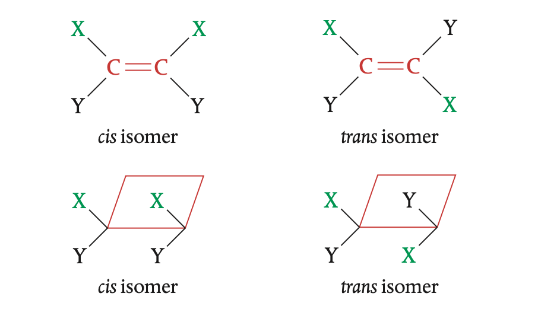
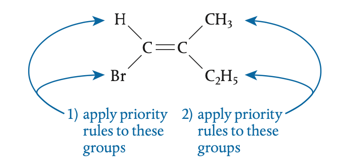
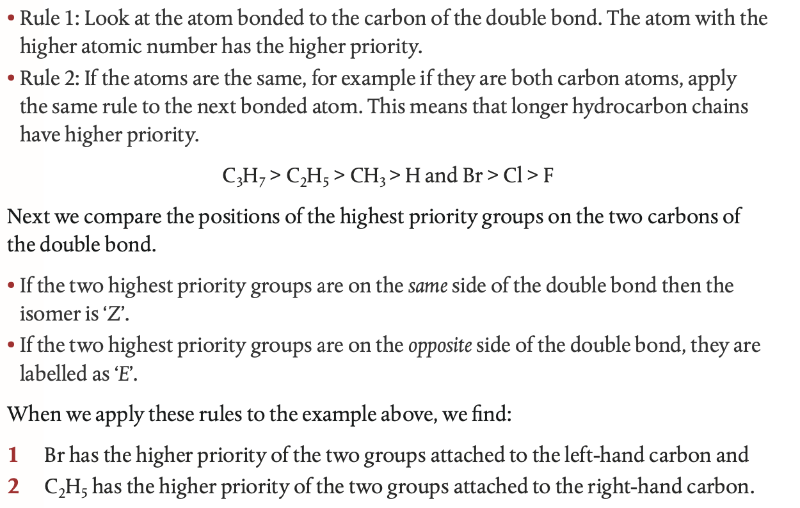
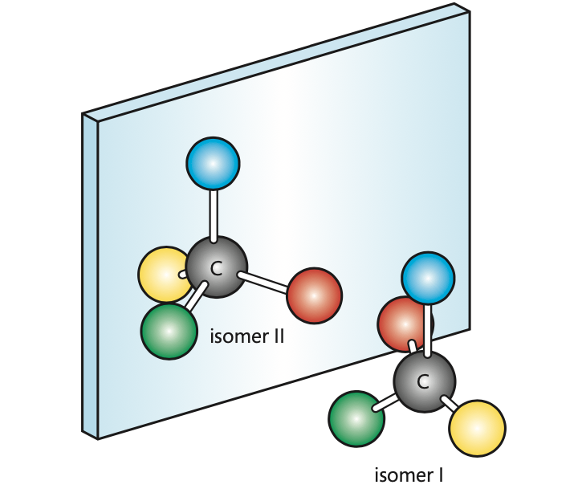
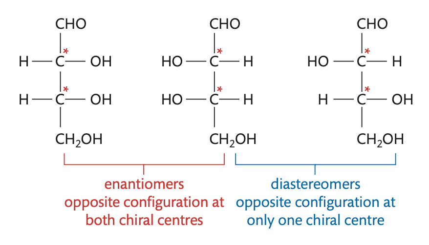

Isomers refers to compunds with the same molecular formula, but different structures.
Within isomers, there are more specific types of isomerism, which can be hard to distinguish.
The following section attempts to categorize and explain them.
Structural Isomerism
This often refers to organic compunds where atoms or functional groups can
be attached in different positions. (2-methylpropane and 1-methypropane is an example)
The atoms/functional groups are in completely different places.
Stereoisomerism
This refers to the different spatial arrangements of atoms in molecules.
Within this, there are two sub-categories: Configurational isomerism and Conformational isomerism
Conformational isomerism
Conformational isomers can be interconverted by free rotation about σ bonds. So it is like three different
atoms sigle bonded to a carbon. If you rotate them, they move postive but eventually return (or conforming...) to the same location.
Configurational isomerism
Configurational isomerism can be interconverted only by breaking covalent bonds. So it can't be freely rotated,
as atoms/groups are stuck in the same position. This can be further divided into sub-categories.
Cis–Trans Isomers
These Isomers exist when there is a double bond. When there is some constraint in a
molecule that restricts the free rotation of substituted groups, they become fixed in space relative to each other
This usually happens in
Double Bonded and
Cyclic Molecules
Cis isomers are like
Sisters, they are on the same side. Trans isomers are on different sides.

E/Z isomerism
What if the carbons are bonded to more than 2 types of different groups?
Then, the molecule can be classified as E/Z isomers instead. To classify: first assign priority:

Then...

Optical Isomers
If the carbon bonds to four different groups, then it forms an optical isomer. The four groups,
arranged tetrahedrally around the carbon atom with bond angles of 109.5°, can be arranged in
two different three-dimensional configurations which are mirror images of each other. These two
configurations are called enantiomers. The two enantiomers can rotate plane polarized light
in a polarimeter to the same degree, but opposite direction.

A mixture containing equal amounts of the two enantiomers is known as a racemic mixture or a racemate.
As we will see, such a mixture is said to be optically inactive.
If a molecule have
n chiral carbon centers, then, there will be 2
n
enantiometer/isomers. Many molecules have more than one chiral centre,
and so can give rise to different configurations at each position. hen molecules have different
configurations at one or more, but not all, chiral centres, they are known as
diastereomers
and are not mirror images of each other.
